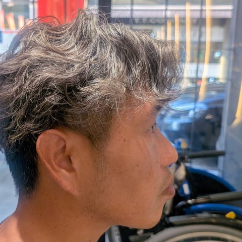

広島から ／ 地球活性化実行委員会
障がいがあっても、なくても。
自然につながれる場所を、広島に増やしたい。
地球活性化実行委員会は、電動車椅子で暮らす岡ちゃんの呼びかけで始まった広島の市民グループです。広島のまちで、誰もが気軽に集まり、知り合い、助け合える場所づくりに取り組んでいます。
ABOUT
呼びかけ人 岡ちゃん

広島在住。電動車椅子で生活しています。生活保護を受けながら暮らす中で、制度や支援だけでは埋まらない「人とのつながり」の大切さを実感してきました。
だからこそ、障がいの有無に関係なく、同じ場所で笑い合える機会を自分の手でつくりたい。地域の皆さんと一緒に、小さな一歩から始めています。
広島在住
電動車椅子ユーザー
地域活動
EVENT
夢フェスに出演します
2026年11月1日（日）
- 会場
- アリスガーデン（広島市中区）
- 内容
- 「ゆめのたね」主催の公開収録イベント「夢フェス」に、ゲストとして出演します。
- 時間
- 14:40〜
当日のお手伝いをしてくださるボランティアも募集しています。
JOIN US
夢フェス・地球活性化実行委員会
仲間を募集しています
できることを、できる時間だけ。障がいのある方も、ない方も、どなたでも歓迎です。
当日スタッフ
受付・誘導・会場での声かけなど
SNS・撮影
活動の写真や動画を撮って発信
応援メンバー
LINEグループで情報を受け取り、イベントに参加